Tengrade is a web application that allows users to give and get opinions on any topic. I along with my teammates, Amir and Janet, worked with Ted Werth, a Tengrade cofounder, to improve the usability and conversion rate of one of Tengrade’s most frequently visited sections: Topic Pages. Topic pages group many related topics together under a parent topic, e.g. The Simpsons. Individual topics are rated from 0 to 10.
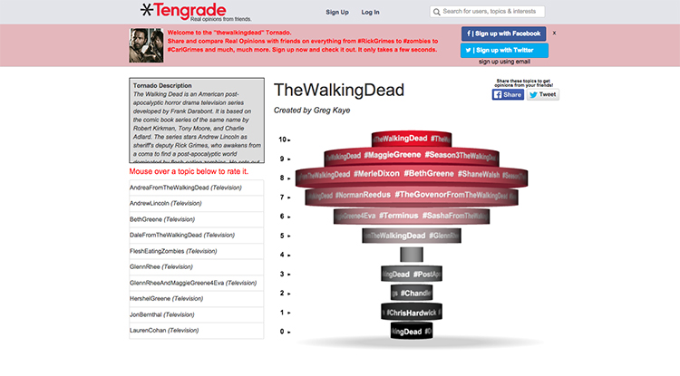Above is an image of the original Topic Page that received a good deal of traffic, but failed to effectively engage or convert its visitors. By the end of our project, my team delivered an improved Topic Page, both in form and function, as well as revamped sign up and onboarding education flow that better fulfilled the needs of our stakeholder and his users.
I took ownership of Tengrade’s topic rating flow, while my teammates handled the signup and onboarding education flows. I also owned the best in class audit, sketches, and high fidelity mockups. We all contributed to the stakeholder interview, persona development, persona scenario, user journey and wireframe prototype.
We conducted a stakeholder interview to learn about Tengrade and its users as well as to understand Ted’s definition of project success. By the end of the interview, we agreed to focus on increasing the topic pages’ conversion rate, ratings per user, visits per user and vitality metrics.
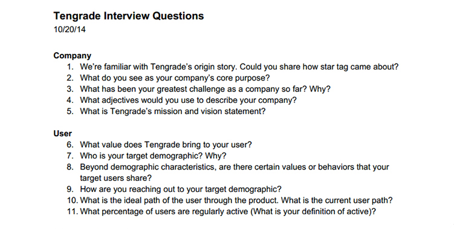We knew that Tengrade’s Topic Pages failed to convert visitors to users, but we didn’t know why. We conducted our first round of usability testing to address this question and learned that visitors couldn't find the topics they were supposed to rate and generally didn’t know what they were supposed to do on the Topic Page. We tested five users in total.
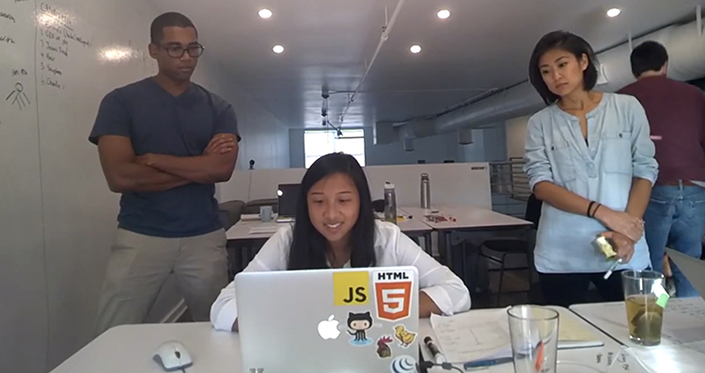I collected a number of well designed mobile and desktop patterns that related to either the process of rating something or taking action on a bit sized piece of information. These patterns served as inspiration for the design phase.
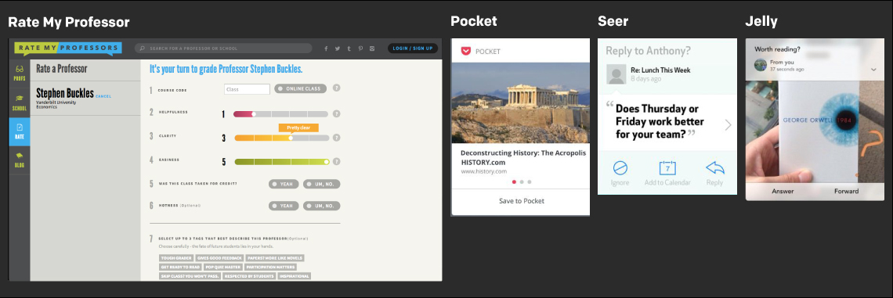Using the information we gathered from our stakeholder interview and our own individual research, we created a persona named Jeff to remind us of our primary user’s affinities and social media use.
We created a persona scenario to articulate the exact path Jeff would enter the Topic Page. In this case, Jeff enters the Topic Page from a targeted Twitter advertisement.
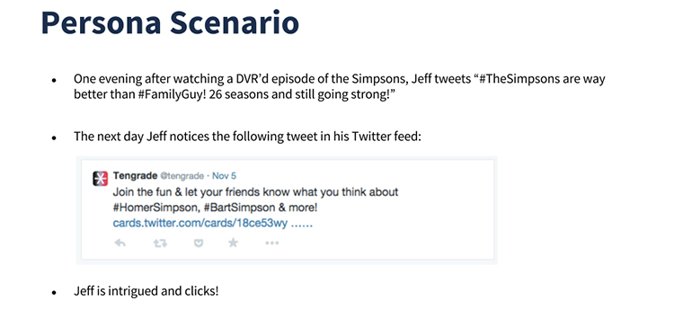A detailed user flow listed each of the pages and actions Jeff would take as navigated through the topic rating, sign up and onboarding sections.
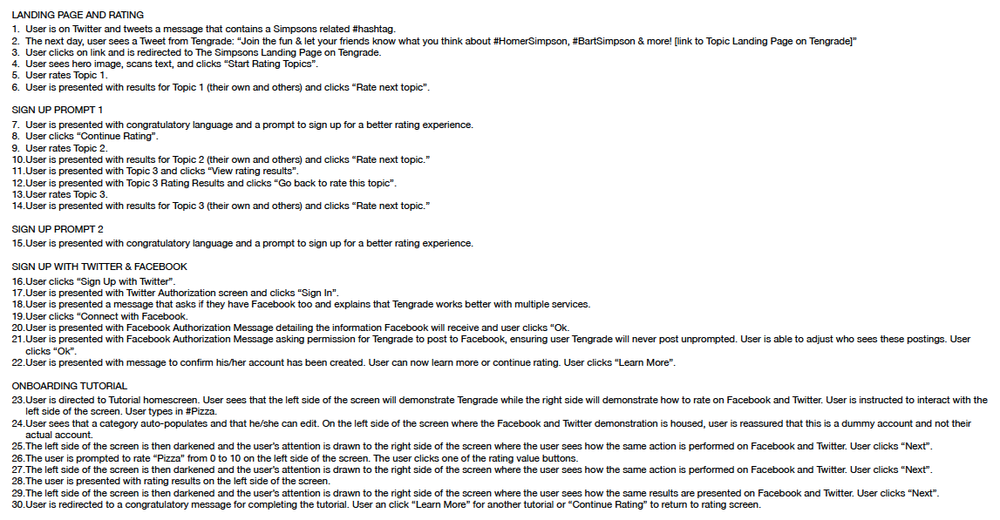I sketched a variety of topic page layouts and a handful of topic card variations to begin visualizing the design solution.
I created a high fidelity mockup in Adobe Illustrator to accurately depict the look and feel of the final Topic Page. The typography and colors help the page feel fun, interesting, modern and innovative.
We each created low fidelity Baslamiq wireframes of our respective sections and combined them into a comprehensive Invision prototype.
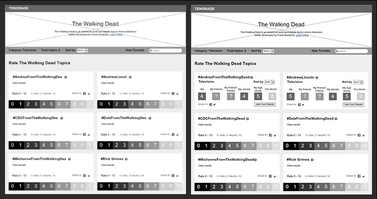 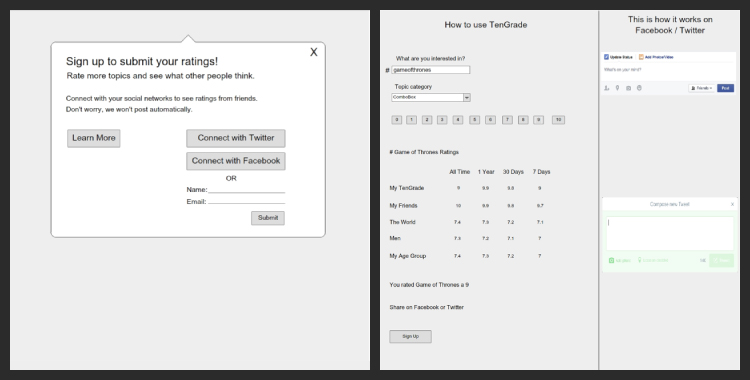 View PrototypeUsability testing was crucial to creating a Topic Page that met the needs of Tengrade and its user. My designs were rejected three times until I settled on the final 4th version. The test, feedback,iterate loop helped the Topic Page design progress from two columns of multiple topic cards to one individual topic card shown at a time.
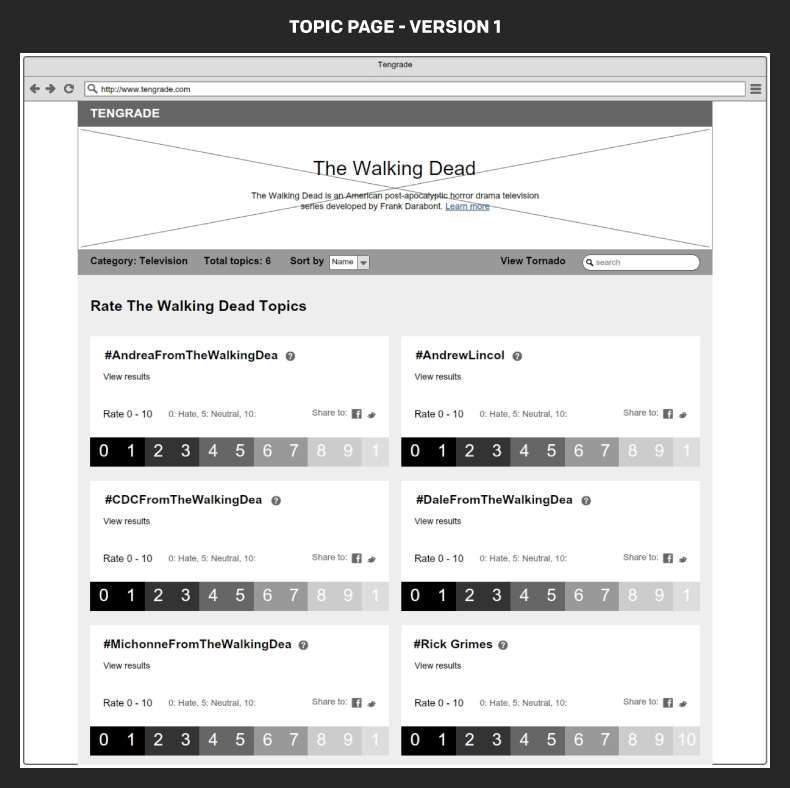 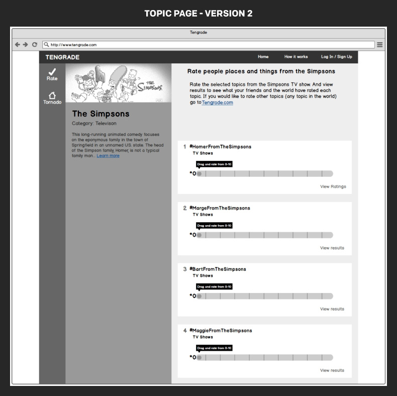 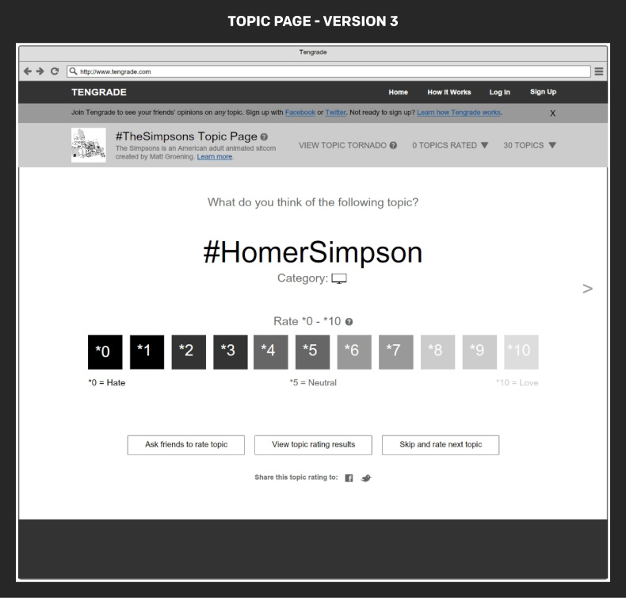 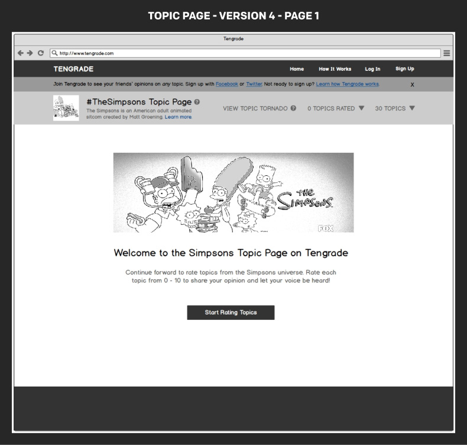 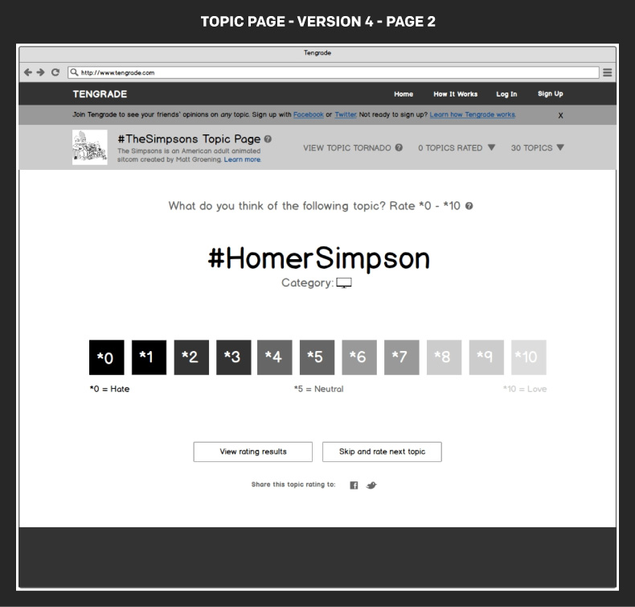By implementing a user centered design process and devoting ample time to usability testing and design iteration I was able to create a reimagined Topic Page that usability testing participants found much easier to use and understand. Ratings per user and frequency of sign ups increased significantly. My team and I were happy to hear that Ted planned to implement some of our work.